首页 > 编程笔记
JDK安装和配置教程（图解）
Java 开发工具包（JavaSE Development Kits，简称 JDK）是一套由独立程序构成的集合，用于开发和测试 Java 程序，是 Java 程序开发的首要工具。
JDK 由 Java API、Java 工具和 Java 基础类库等组成，其核心是 Java API。
API（Application Programming Interface，应用程序接口）是 Java 提供的供编程人员使用的标准类库，开发人员可以用这些类库中的类来实现 Java 程序的各种功能，从而免去自行设计很多常用类的繁重工作，极大地提高开发效率。另外，Java API 还包括一些重要的语言结构以及基本图形、网络和文件 I/O 等。
本教程使用的是 JDK 15 版本，与之前的版本相比，JDK 15 为用户提供了 14 项主要的增强（JEP），同时新增了1个孵化器模块、3个预览功能、2个不推荐使用的功能，并删除了2个淘汰的功能。
通过浏览器打开 Oracle 官网，地址为：
JDK 安装文件下载成功后，就可以安装了。
本教程使用的是 64 位的 Windows 10 环境，接下来详细演示 Windows 64 位平台下 JDK 15 的安装过程，具体步骤如下：
1) 双击从 Oracle 官网下载的 JDK 安装文件，进入 JDK 安装界面，如图1所示。
2) 单击图1中的“下一步”按钮，进入 JDK 自定义安装界面，如图2所示。
3) 建议选择直接安装到默认目录，单击“下一步”按钮即可进行安装，如图3所示。也可以单击“更改”按钮，自行选择安装目录。
4) 安装完毕后，弹出如图4所示的界面，单击“关闭”按钮即可。
Path 环境变量的作用是设置一个路径，由操作系统去寻找该路径下的文件（如 .bat、.ext、.com 等），对 Java 来说就是 Java 的安装路径。
下面以 Windows 10 操作系统为例说明，具体步骤如下：
1) 选择“控制面板→系统和安全→系统”（也可以在桌面上右击“此电脑”或“我的电脑”，在弹出的快捷菜单中选择“属性”命令），进入系统窗口，如图5所示。
2) 单击“高级系统设置”选项，弹出“系统属性”对话框，如图6所示。
3) 单击“环境变量”按钮，弹出 “环境变量”对话框，如图7所示。
4) 在“环境变量”对话框的“系统变量”区域中，单击“新建”按钮，打开“新建系统变量”对话框。并在“变量名”文本框中输入
笔者此时的安装目录为
5) 在“环境变量”对话框的“系统变量”区域中选中系统变量 Path，如图9所示。
6) 在图9所示的对话框单击“编辑”按钮，打开“编辑环境变量”对话框，单击“新建”按钮，在编辑页面的文本框中添加
这里配置 JAVA_HOME 的好处是，当 JDK 的版本或安装路径发生变化时，只需要修改 JAVA_HOME 的值，而不用修改 Path 环境变量的值。
个别教程中会提到 Classpath 环境变量，Classpath 环境变量的作用与 Path 环境变量的作用类似，它是 JVM 执行 Java 程序时搜索类的路径的顺序，以最先找到为准。JDK 1.5 之后，如果没有设置 Classpath 环境变量，则 Java 解释器会在当前路径下搜索 Java 类，故本教程不再赘述。
1) 按 Windows+R 快捷键，调出 DOS 命令行运行窗口，在搜索框中输入
2) 单击“确定”按钮，进入命令行窗口，如图12所示。
3) 在命令行窗口中输入
JDK 由 Java API、Java 工具和 Java 基础类库等组成，其核心是 Java API。
API（Application Programming Interface，应用程序接口）是 Java 提供的供编程人员使用的标准类库，开发人员可以用这些类库中的类来实现 Java 程序的各种功能，从而免去自行设计很多常用类的繁重工作，极大地提高开发效率。另外，Java API 还包括一些重要的语言结构以及基本图形、网络和文件 I/O 等。
本教程使用的是 JDK 15 版本，与之前的版本相比，JDK 15 为用户提供了 14 项主要的增强（JEP），同时新增了1个孵化器模块、3个预览功能、2个不推荐使用的功能，并删除了2个淘汰的功能。
知识点拨
增强（JEP）、孵化器模块（Incubator）和预览特性（Preview）的具体含义如下：- 增强：英文全称为 JDK Enhancement Proposals，简称 JEP，是 JDK 增强建议，主要包括新增特性和改进提案。
- 孵化器：实际上就是实验版，主要从 Java 社区收集意见、反馈，稳定性差，后期可能有比较大的变动，称之为尚未定稿的 API/工具。
- 预览特性：规格已经成型，实现基本确定，但是最终未定稿，这些特性还可能被移除，但可能性比较小，一般都会定下来。
下载和安装JDK
编写 Java 程序，首先要下载 JDK 安装程序，读者可以直接从 Oracle 公司的官方网站下载。通过浏览器打开 Oracle 官网，地址为：
http://www.oracle.com/technetwork/java/javase/downloads/index.html
根据提示进入下载页面，找到与自己的计算机操作系统对应的 JDK 安装文件下载链接，单击下载即可。网页内容可能因版本或 Oracle 公司规划而有所不同，用户可以根据需要选择所需要的 JDK 版本。JDK 安装文件下载成功后，就可以安装了。
本教程使用的是 64 位的 Windows 10 环境，接下来详细演示 Windows 64 位平台下 JDK 15 的安装过程，具体步骤如下：
1) 双击从 Oracle 官网下载的 JDK 安装文件，进入 JDK 安装界面，如图1所示。
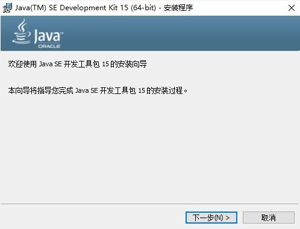
图1：JDK 安装界面
图1：JDK 安装界面
2) 单击图1中的“下一步”按钮，进入 JDK 自定义安装界面，如图2所示。
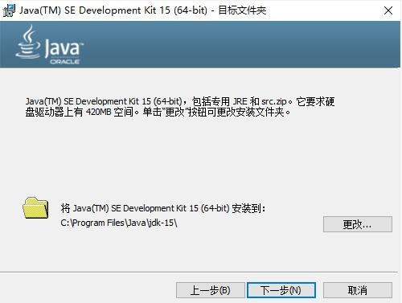
图2：JDK 默认安装路径
图2：JDK 默认安装路径
3) 建议选择直接安装到默认目录，单击“下一步”按钮即可进行安装，如图3所示。也可以单击“更改”按钮，自行选择安装目录。
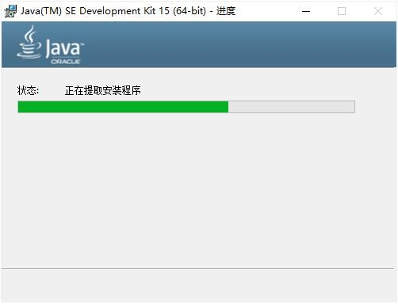
图3：等待安装界面
图3：等待安装界面
4) 安装完毕后，弹出如图4所示的界面，单击“关闭”按钮即可。
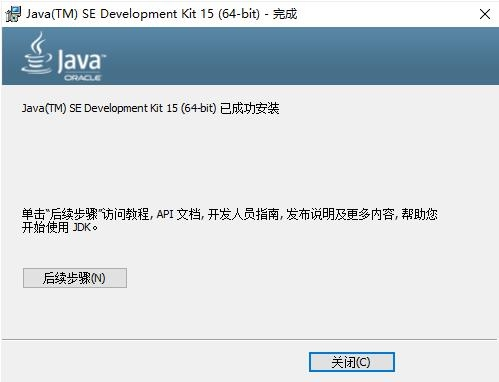
图4：JDK 安装完毕界面
图4：JDK 安装完毕界面
JDK 环境变量配置
在使用 Java 来编译和运行程序之前，必须先设置好环境变量。所谓环境变量，就是在操作系统中定义的变量，可供操作系统上的所有应用程序使用。Path 环境变量的作用是设置一个路径，由操作系统去寻找该路径下的文件（如 .bat、.ext、.com 等），对 Java 来说就是 Java 的安装路径。
下面以 Windows 10 操作系统为例说明，具体步骤如下：
1) 选择“控制面板→系统和安全→系统”（也可以在桌面上右击“此电脑”或“我的电脑”，在弹出的快捷菜单中选择“属性”命令），进入系统窗口，如图5所示。
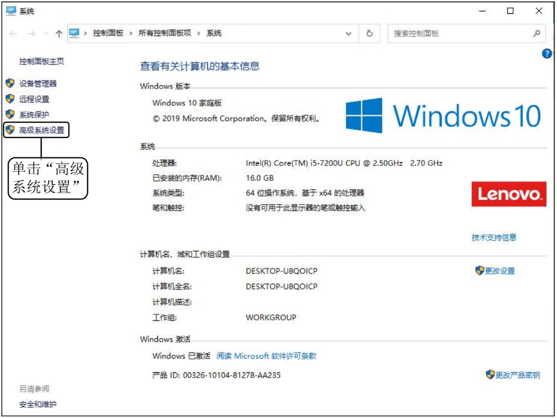
图5：Windows 10 系统窗口
图5：Windows 10 系统窗口
2) 单击“高级系统设置”选项，弹出“系统属性”对话框，如图6所示。
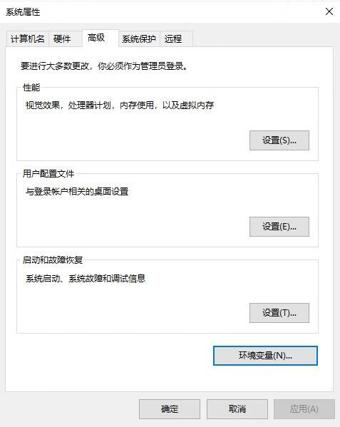
图6：“系统属性”对话框
图6：“系统属性”对话框
3) 单击“环境变量”按钮，弹出 “环境变量”对话框，如图7所示。
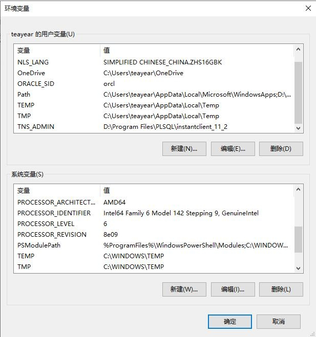
图7：“环境变量”对话框
图7：“环境变量”对话框
4) 在“环境变量”对话框的“系统变量”区域中，单击“新建”按钮，打开“新建系统变量”对话框。并在“变量名”文本框中输入
JAVA_HOME，在“变量值”文本框中输入 JDK 安装目录。笔者此时的安装目录为
C:\Program Files\Java\jdk-15，如图8所示。单击“确定”按钮，完成 JAVA_HOME 环境变量的配置。
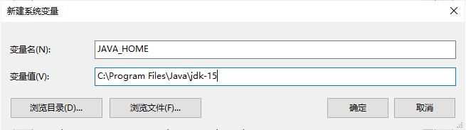
图8：“新建系统变量”对话框
图8：“新建系统变量”对话框
5) 在“环境变量”对话框的“系统变量”区域中选中系统变量 Path，如图9所示。
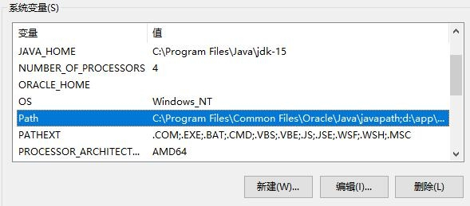
图9：“环境变量”对话框选中 Path 变量
图9：“环境变量”对话框选中 Path 变量
6) 在图9所示的对话框单击“编辑”按钮，打开“编辑环境变量”对话框，单击“新建”按钮，在编辑页面的文本框中添加
%JAVA_HOME%\bin，如图10所示。然后单击“确定”按钮，保存环境变量，完成配置。
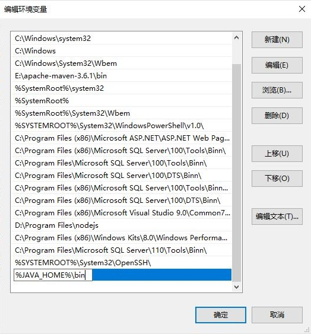
图10：“编辑环境变量”对话框
图10：“编辑环境变量”对话框
温馨提示
在配置 Path 环境变量时，JAVA_HOME 环境变量并不是一定需要配置的，我们也可以直接将 JDK 的安装路径（C:\Program Files\Java\JDK-15\bin）添加到 Path 环境变量中。这里配置 JAVA_HOME 的好处是，当 JDK 的版本或安装路径发生变化时，只需要修改 JAVA_HOME 的值，而不用修改 Path 环境变量的值。
个别教程中会提到 Classpath 环境变量，Classpath 环境变量的作用与 Path 环境变量的作用类似，它是 JVM 执行 Java 程序时搜索类的路径的顺序，以最先找到为准。JDK 1.5 之后，如果没有设置 Classpath 环境变量，则 Java 解释器会在当前路径下搜索 Java 类，故本教程不再赘述。
测试开发环境搭建成功与否
JDK 配置完成后，需要测试 JDK 是否能够在计算机上运行，具体步骤如下：1) 按 Windows+R 快捷键，调出 DOS 命令行运行窗口，在搜索框中输入
cmd，如图11所示。
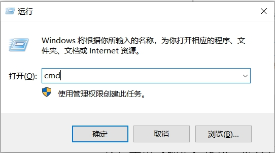
图11：运行窗口界面
图11：运行窗口界面
2) 单击“确定”按钮，进入命令行窗口，如图12所示。
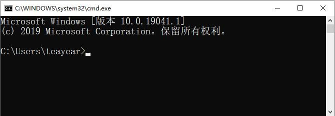
图12：命令行窗口界面
图12：命令行窗口界面
3) 在命令行窗口中输入
javac命令，并按 Enter 键，系统会输出 javac 的帮助信息，如图13所示，说明 JDK 已经成功配置，否则需要仔细检查 JDK 环境变量的配置是否正确。
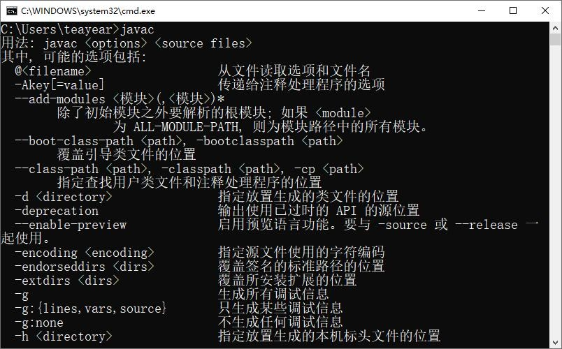
图13：命令行信息
图13：命令行信息
关注公众号「站长严长生」，在手机上阅读所有教程，随时随地都能学习。内含一款搜索神器，免费下载全网书籍和视频。

微信扫码关注公众号